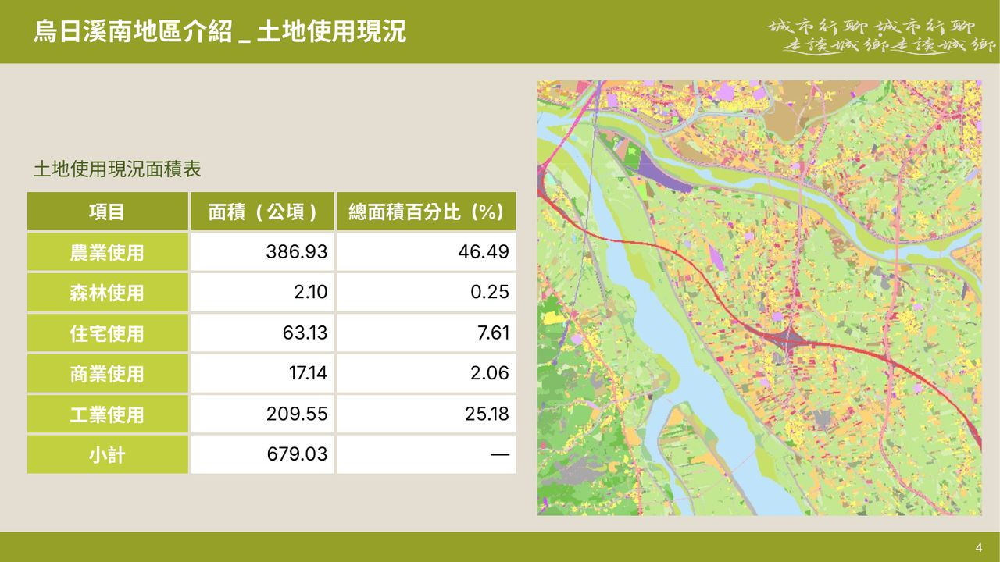
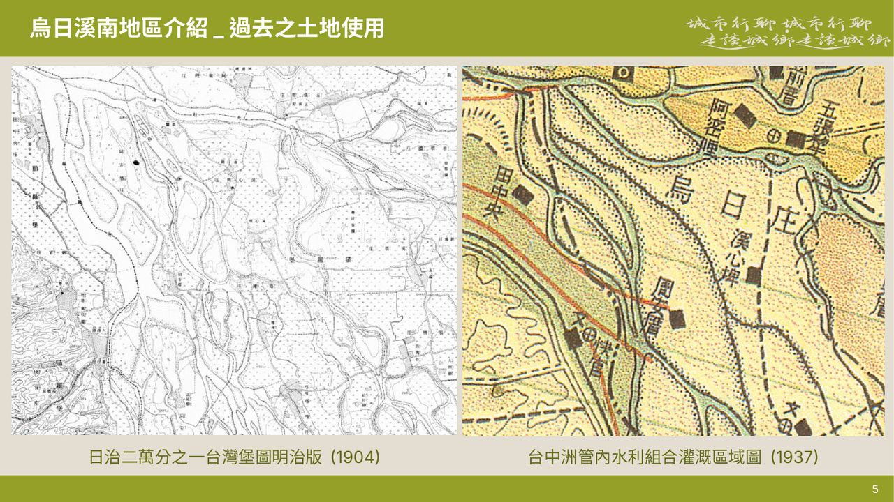
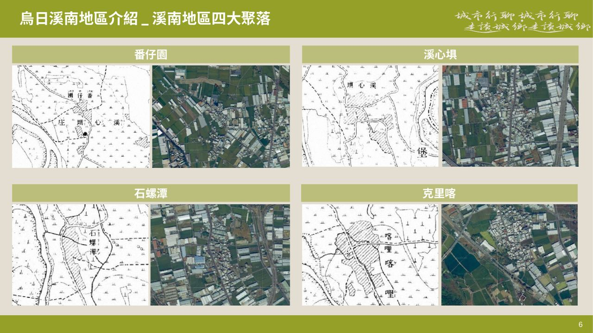
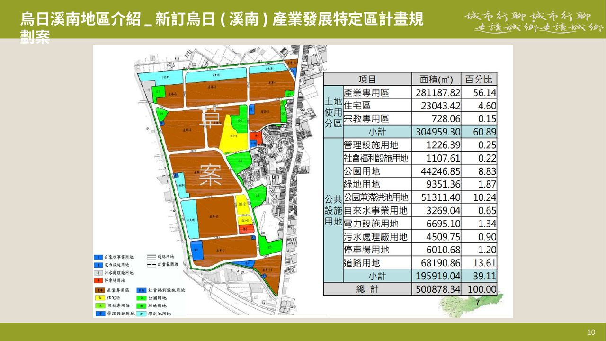
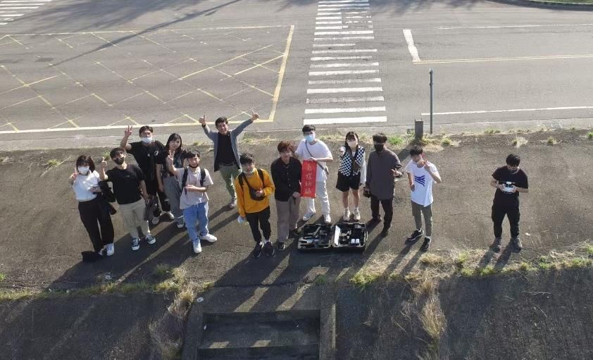
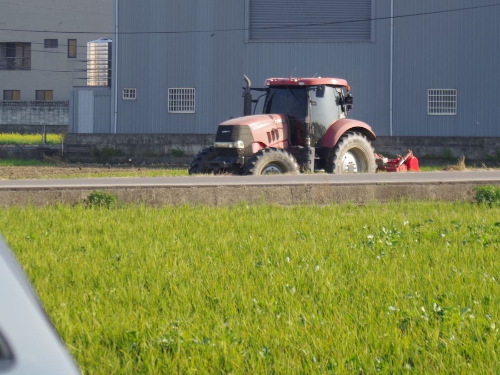
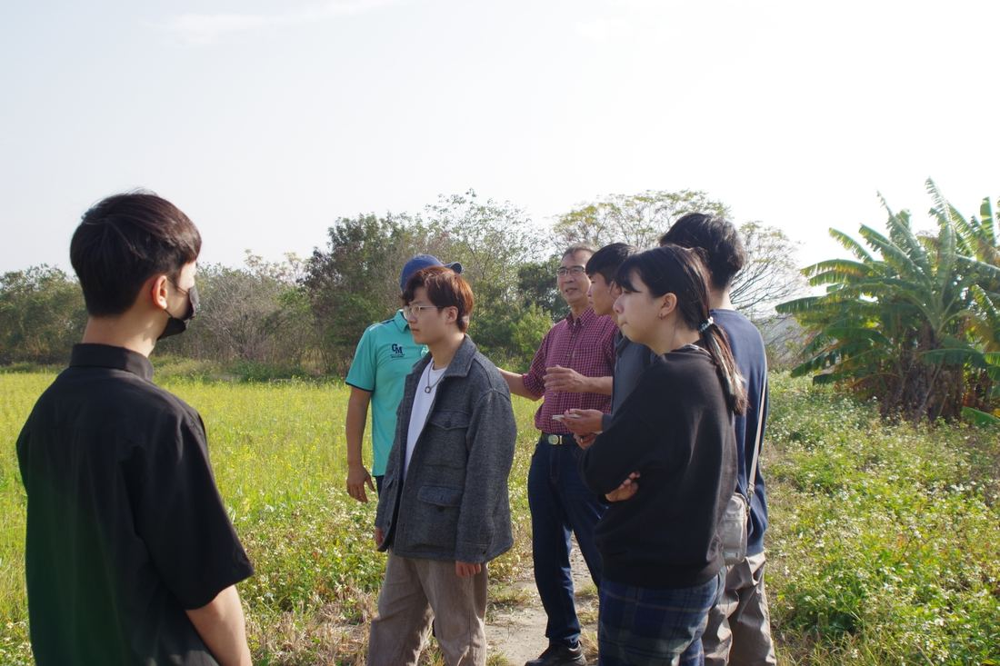
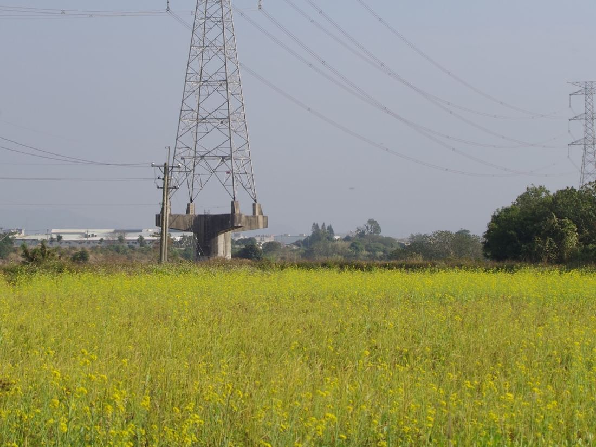

臺灣怎麼定義農地
同樣叫「農地」，在三套土地管理體系裡有不同的名字。讀書會先把這張對照表攤開，才知道後面談的「農地非農用」，到底是在哪一種農地上發生。
國土計畫
- 農業發展地區第一類
- 農業發展地區第二類
- 農業發展地區第三類
- 農業發展地區第四類
- 農業發展地區第五類
都市計畫
- 農業區
非都市土地
- 特定農業區
- 一般農業區
案例一：中科特定區農業區
以中科特定區農業區內 655.64 公頃為研究範圍，用 107 年全國國土利用調查盤點使用現況：水田仍是最大宗，但製造業與倉儲已經佔到 17%，越靠近中科路北側，工廠越密集。
討論的解方：《工廠管理輔導法》未登記工廠納管流程


案例二：烏日溪南
烏日溪南位在烏溪南岸、高鐵烏日基地旁，過去是番仔園、溪心埧、石螺潭、克里喀四個聚落的農村。許多沒有登記的工廠陸續進駐農地，當時的臺中縣政府為了輔導工廠合法化，曾規劃以市地重劃徵收農地，新訂「烏日（溪南）產業發展特定區」。第一次走讀由陳建華負責，帶大家實地走進這片農地。




農地工廠旁，長出台灣第一好米？
走讀當天拜訪了烏日冠軍米農林凡閔。他的稻米拿下 108 年農糧署「臺灣稻米達人冠軍賽」好米組冠軍，也獲得日本「米・食味分析鑑定競賽」第 24 屆特別優秀賞。同一片溪南農地上，冠軍米和鐵皮工廠比鄰而居。
- 萊爾富中縣中溪店集合
- 茶奶奶買午餐
- 鍊發壘球場周邊，徒步看農地工廠
- 冠軍米農地參訪，訪談林凡閔
- 高鐵烏日基地、烏溪堤防、東園稻田公園、東園社區




角色扮演：替每個陣營發聲
寒假過後的第二次讀書會，先分享溪南走讀的心得，再把大家分成農民、業主、政府與規劃者四個陣營。題目是：根據整個寒假學到的東西，把自己帶入分組的角色，設身處地想想他們的優缺點。
1溪南地區是否該設置產業園區？
2未登記工廠「就地合法」的優缺點？
3農地非農用，會怎麼影響糧食自給率？
討論的規則只有三個字：尊重、理性、平和。各組派代表上台分享後，讀書會也預告了下一期的主題「鄉村地區整體規劃」與清水走讀。
這種現象合理嗎？該讓農地回歸農用，或能容許其他使用？
分組簡報：平地光電
同一場讀書會上，「平地光電 A 組」（幹部郭文翔、徐詠晶）把農地非農用延伸到光電：從太陽能板的原理與結構講起，再談政策目標與它在農地、魚塭上引起的競合。
- 先屋頂、後地面：初期推動屋頂型設置，再逐步推動地面型的大規模開發。
- 農地上的上限：依《申請農業用地作農業設施容許使用審查辦法》，含綠能設備在內的農業設施總面積，不得超過坐落農業用地面積的 40%。
- 與農漁業的競合：漁電共生有立柱型、塭堤型、浮台型；漁民、綠能公司與政府三方立場不同。
- 被忽略的生態：板下的三角空間成了鳥類築巢點，卻伴隨感電與火災風險。光電架設若有完善的環境與社會檢核、避開生態敏感區，才能減少衝擊。
本主題活動3 場
2022.12.23
說明會首場說明會暨第一期讀書會
閱讀主題「農地非農用」，以中科特定區農業區為案例。忠勤樓 B08。
2023.01.14
2023.02.17
工作坊第二次讀書會：農地非農用角色扮演
分成農民、業主、政府、規劃者陣營，替角色發聲。